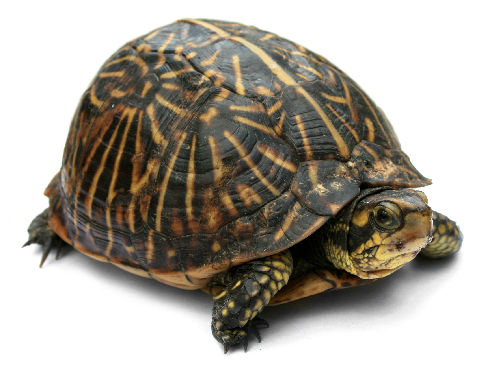
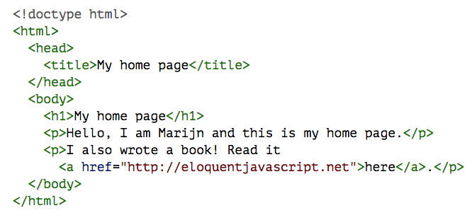
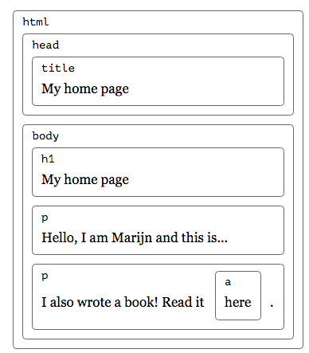

Objects and the Document Object Model (DOM)
(05/02/2016)
D-Code
Welcome!
Goals
What is a control structure? (Feel free to use your own words.)
"A control structure is a block of programming that analyzes variables and chooses a direction in which to go based on given parameters." -Wikiversity
What is an if statement?
A control structure that checks if a given boolean variable or expression is true
How would you write an if statement that increments i if i is less than 6?
How is an if-else statement different from an if statement?
An if-else statement provides an instruction for if the condition is false
How would you write a statement that increments i if i is less than 6, but decrements it otherwise?
What is a switch?
A switch is a control structure that allows the value of a variable to change the flow of execution
What does a break statement do in a switch statement?
It prevents the statements in the switch block from "falling through" (all just being executed in sequence)
What is the default label in a switch statement for?
The default label creates an option for when the variable does not match any of the cases.
Write a switch statement for a traffic light.
What is a for loop?
A for loop is a control structure that allows a statement to be repeated until a certain condition is met.
Let's write a for-loop that tells someone to clap ten times.
What is a while loop?
A while loop is a control structure that allows a statement to be repeated while a certain condition is under effect. The condition is checked at the beginning of each loop.
Let's write a while-loop that tells someone to clap ten times.
What is a do-while loop? (How does it differ from a while loop?)
A do-while loop is a control structure that allows a statement to be repeated while a certain condition is under effect. However, the code within a do-while looop is always executed at least once, and the condition is checked at the end of each loop.
Let's write a do-while loop that tells someone to clap ten times.
What are objects?
Objects
"A collection of named values"
"Variables containing variables"
"The building blocks of JavaScript"
(source: W3Schools)
We use objects to store and access information. They are a way to represent data. We can even use them to represent real life objects.
Mea Culpa
There's a very important type of object that you need to know about, but we won't go into much detail on it today. It's called an array, and it's a fundamental coding concept.
Things You Must Know About Arrays
- They store many values, called elements, in a single variable.
- They can hold data of any type: numbers, strings, booleans, etc.
- They have indices: numbers which refer to each value.
- var destiny = ["Beyoncé", "Kelly", "LaTavia", "LeToya"];
- Beyoncé has an index of 0, Kelly's is 1, and so on.
- You access elements of an array by using the array name and brackets.
var destiny = ["Beyoncé", "Kelly", "LaTavia", "LeToya"];
What is the value of destiny[2]?
var numbers = [21, 66, 33, 55, 2];
What is the value of numbers[1]?
var bools = [true, true, false, true, false];
How about bools[5]?

We're going to create a representative of an object the same way it's done in JavaScript. To help us, we have a special guest...
Kelly, the common box turtle!
Remember when we talked about properties and values? JavaScript objects have those too, and so does Kelly.
- weight: 2.4
- gender: female
- ...
Take 60 seconds to come up with as many other properties as you can.
Ready? GO!
Now, how do we create Kelly with these properties?
Goals
Creating Objects
feat. Kelly the Box Turtle
There are two ways to access information about Kelly:
(scroll down)
1. Using periods (dot notation).
2. Using brackets (bracket notation).
The main difference is that you can only use dot notation when your variable has that specific name, whereas what you put into the bracket will be evaluated (so a mathematical expression could work, for example).
Goals
Methods
Now, Kelly isn't just a statue of a turtle...she's the real thing.
That means she can do things! She can perform certain functions.
A property that contains a function of an object is also called a method of that object.
source: EloquentJavaScript.net (a long but good read)
To invoke a function, use the parentheses. Otherwise, you will just get the function definition.
An example is provided in objectsAndDom1.html.
Can you figure out how to make Kelly's position increase to 2?
5 Minutes of Struggle
Struggle 1: add a button that can be pressed to move Kelly forward.
Struggle 2: Give Kelly another attribute and a function. Then, add a button that calls the function. Example: rollOver(); which will say if Kelly is on her feet or on her shell.
Goals
Some Objects Included
Browser Object Model
Some variables in JavaScript refer to thing outside of the page contents themselves, but still within the browser. You did not make these yourself as the programmer, but you would still need access to them.
The examples we will look at here are part of the browser object model.
Window object
Represents an open window in a browser.
One to refer to the entire browser in which the webpage is located; may be more if a webpage has frames (<iframe>) within it.
Navigator object
Contains information about the browser itself.
History object
Contains URLs visited by the browser.
Source: W3Schools
Goals
The DOM
Document-Object Model
- As mentioned above, the document object model is a way of representing the contents of a webpage as a JavaScript object.
- The keyword document is used to get a reference to the webpage.
- From there, you can reference individual variables by their id, or you can retrieve a list of them by using tags or classes.
Compare:
 How the DOM works
- Browser retrieves HTML text from page
- Browser parses (analyzes) text
- Browser builds a model of the page, one that you can edit temporarily
In objectsAndDom1.html, you can see an example of using the DOM when we use "document" to get the element with an ID of "position".
Traversing the DOM
Many think of the document object model as a tree-like structure.

Traversing the DOM
The node is the building block of the DOM. Everything in the HTML document is a node.
Every node has one parent.
A node can have its own children.
A node can have siblings--other nodes with the same parent. (This is sort of like a family tree.)
Source: W3Schools
You can access particular elements not just by getting their IDs, but also by going through the DOM "tree".
Warning: A common mistake (Kyle has made it) is to think that an element node (title, h1, p, etc.) can contain text. They don't. Instead, they contain text nodes with some string as a value. (Explore objectsAndDom2.html to understand this.)
And Now We're Done
At least...by our definition of done.